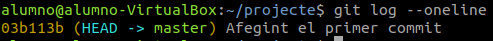
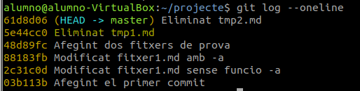
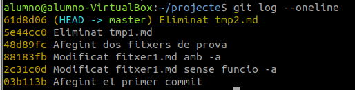
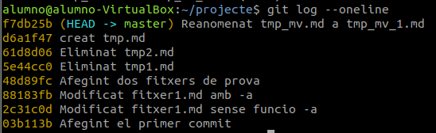
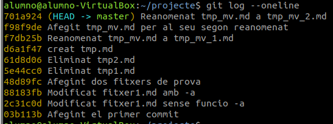
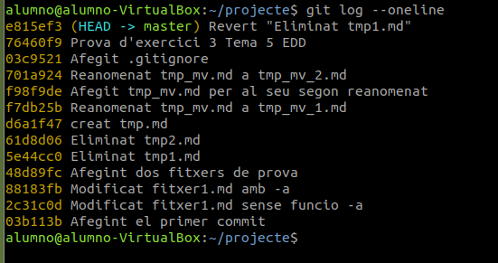

Benvinguts a la meua documentació
Començant a treballar amb repositoris
Ara anem a treballar amb el Git desde el Ubuntu.
Creació i inicialització de la carpeta del projecte
-
Creem la carpeta del projecte:
$ mkdir projecte -
En situem dins:
$ cd projecte -
Inicialitzem el repositori en la carpeta:
$ git init
-
Vore el estat del repositori:
$ git status
En la rama master
No hay commits todavía
no hay nada para confirmar (crea/copia archivos y usa "git add" para hacerles seguimiento)
Creació de contingut
-
Comandament:
$ touch fitxer1.md. -
Estat:
alumno@alumno-VirtualBox:~/projecte$ git status
En la rama master
No hay commits todavía
Archivos sin seguimiento:
(usa "git add <archivo>..." para incluirlo a lo que será confirmado)
fitxer1.md
no hay nada agregado al commit pero hay archivos sin seguimiento presentes (usa "git add" para hacerles seguimiento)
Fent el seguiment de l’arxiu
-
Comandament:
$ git add fitxer1.md. -
Estado:
alumno@alumno-VirtualBox:~/projecte$ git status En la rama master No hay commits todavía Cambios a ser confirmados: (usa "git rm --cached <archivo>..." para sacar del área de stage) nuevos archivos: fitxer1.md
Fent el commit del fitxer
-
Comandament:
$ git commit -m "Afegint el primer commit".alumno@alumno-VirtualBox:~/projecte$ git commit -m "Afegint el primer commit" [master (commit-raíz) 03b113b] Afegint el primer commit 1 file changed, 0 insertions(+), 0 deletions(-) create mode 100644 fitxer1.md -
Estado:
alumno@alumno-VirtualBox:~/projecte$ git status En la rama master nada para hacer commit, el árbol de trabajo está limpio -
Registre de Commits:
$ git logalumno@alumno-VirtualBox:~/projecte$ git log commit 03b113bc8558079752319467be406222bbabd4e0 (HEAD -> master) Author: Jonathan Signes <jonsigfal@alu.edu.gva.es> Date: Tue Oct 29 09:43:59 2024 +0100 Afegint el primer commit -
Registre de Commits en una linea:
$ git log --oneline
Esborrant archius
Per exemplificar això, partirem dels fitxers tmp1.md i tmp2.md creats en l'exercici 2.
En l'exemple esborrarem el fitxer tmp1.md.
-
Eliminem el filtxer localment, en la zona de treball:
$ rm tmp1.mdAra observem l'estat:
alumno@alumno-VirtualBox:~/projecte$ git status En la rama master Cambios no rastreados para el commit: (usa "git add/rm <archivo>..." para actualizar a lo que se le va a hacer commit) (usa "git restore <archivo>..." para descartar los cambios en el directorio de trabajo) borrados: tmp1.md sin cambios agregados al commit (usa "git add" y/o "git commit -a") -
Preparem la següent confirmació:
$ git add tmp1.mdAra observem l'estat:
alumno@alumno-VirtualBox:~/projecte$ git status En la rama master Cambios a ser confirmados: (usa "git restore --staged <archivo>..." para sacar del área de stage) borrados: tmp1.md -
Confirmar els canvis:
alumno@alumno-VirtualBox:~/projecte$ git commit -m "Eliminat tmp1.md" [master 5e44cc0] Eliminat tmp1.md 1 file changed, 0 insertions(+), 0 deletions(-) delete mode 100644 tmp1.md Està la imatge del commit següent perque se me havia olvidat ferla.
Esborrat directament del repositori
-
Eliminem el fitxer del repositori
$ rm tmp1.mdAra observem l'estat:
alumno@alumno-VirtualBox:~/projecte$ git status En la rama master Cambios no rastreados para el commit: (usa "git add/rm <archivo>..." para actualizar a lo que se le va a hacer commit) (usa "git restore <archivo>..." para descartar los cambios en el directorio de trabajo) borrados: tmp1.md sin cambios agregados al commit (usa "git add" y/o "git commit -a") -
Confirmem els canvis:
alumno@alumno-VirtualBox:~/projecte$ git commit -m "Eliminat tmp2.md" [master 61d8d06] Eliminat tmp2.md 1 file changed, 0 insertions(+), 0 deletions(-) delete mode 100644 tmp2.mdAra observem l'estat:
alumno@alumno-VirtualBox:~/projecte$ git status En la rama master Cambios a ser confirmados: (usa "git restore --staged <archivo>..." para sacar del área de stage) borrados: tmp2.md
Movent arxius
Reanomenat local i extensió al repositori
-
Creant i afegint fitxer
alumno@alumno-VirtualBox:~/projecte$ touch tmp_mv.md alumno@alumno-VirtualBox:~/projecte$ git add tmp_mv.md alumno@alumno-VirtualBox:~/projecte$ git commit -m "creat tmp.md" [master d6a1f47] creat tmp.md 1 file changed, 0 insertions(+), 0 deletions(-) create mode 100644 tmp_mv.md -
Reanomenat local
alumno@alumno-VirtualBox:~/projecte$ mv tmp_mv.md tmp_mv_1.mdAra observem l'estat:
alumno@alumno-VirtualBox:~/projecte$ git status En la rama master Cambios no rastreados para el commit: (usa "git add/rm <archivo>..." para actualizar a lo que se le va a hacer commit) (usa "git restore <archivo>..." para descartar los cambios en el directorio de trabajo) borrados: tmp_mv.md Archivos sin seguimiento: (usa "git add <archivo>..." para incluirlo a lo que será confirmado) tmp_mv_1.md sin cambios agregados al commit (usa "git add" y/o "git commit -a") -
Afegir nous fitxers i canvis al següent commit:
-
Afegim l'esborrat:
alumno@alumno-VirtualBox:~/projecte$ git add tmp_mv.md -
Afegim el nou fitxer al control de versions:
alumno@alumno-VirtualBox:~/projecte$ git add tmp_mv_1.md -
Estat:
alumno@alumno-VirtualBox:~/projecte$ git status En la rama master Cambios a ser confirmados: (usa "git restore --staged <archivo>..." para sacar del área de stage) renombrados: tmp_mv.md -> tmp_mv_1.md
-
-
Confirmem els canvis
alumno@alumno-VirtualBox:~/projecte$ git commit -m "Reanomenat tmp_mv.md a tmp_mv_1.md" [master f7db25b] Reanomenat tmp_mv.md a tmp_mv_1.md 1 file changed, 0 insertions(+), 0 deletions(-) rename tmp_mv.md => tmp_mv_1.md (100%)
Reanomenat directe en el repositori
-
Creant i afegint fitxer
alumno@alumno-VirtualBox:~/projecte$ touch tmp_mv.md alumno@alumno-VirtualBox:~/projecte$ git add tmp_mv.md alumno@alumno-VirtualBox:~/projecte$ git commit -m "Afegit tmp_mv.md per al seu segon reanomenat" [master f98f9de] Afegit tmp_mv.md per al seu segon reanomenat 1 file changed, 0 insertions(+), 0 deletions(-) create mode 100644 tmp_mv.md -
Movem directament el fitxer en el SCV
alumno@alumno-VirtualBox:~/projecte$ git mv tmp_mv.md tmp_mv_2.mdAra observem l'estat:
alumno@alumno-VirtualBox:~/projecte$ git status En la rama master Cambios a ser confirmados: (usa "git restore --staged <archivo>..." para sacar del área de stage) renombrados: tmp_mv.md -> tmp_mv_2.md -
Confirmant els canvis:
alumno@alumno-VirtualBox:~/projecte$ git commit -m "Reanomenat tmp_mv.md a tmp_mv_2.md" [master 701a924] Reanomenat tmp_mv.md a tmp_mv_2.md 1 file changed, 0 insertions(+), 0 deletions(-) rename tmp_mv.md => tmp_mv_2.md (100%)
Desfent canvis entre la zona de preparació i treball
-
Modifiquem el fitxer tmp_mv_1.md
alumno@alumno-VirtualBox:~/projecte$ echo "Prova per desfer canvis" >> tmp_mv_1.md -
Consultem l'estat del SCV
alumno@alumno-VirtualBox:~/projecte$ git status En la rama master Cambios no rastreados para el commit: (usa "git add <archivo>..." para actualizar lo que será confirmado) (usa "git restore <archivo>..." para descartar los cambios en el directorio de trabajo) modificados: tmp_mv_1.md sin cambios agregados al commit (usa "git add" y/o "git commit -a") -
Desfem els canvis
alumno@alumno-VirtualBox:~/projecte$ git restore tmp_mv_1.md alumno@alumno-VirtualBox:~/projecte$ git status En la rama master nada para hacer commit, el árbol de trabajo está limpio
Altres operacions d’interès
Ignorant fitxers en git. El fitxer .gitignore
El fitxer .gitignore serveix per a especificar patrons de noms d'arxius que no volem guardar en el repositori. Aquest fitxer té que estar en l'arrel del directori de treball.
Regles:
- Cada línia contindrà un patró.
- S’admeten línies en blanc com a separador per millorar la llegibilitat.
- Els comentaris comencen amb #.
- El prefix ! nega el patró (farà que sí incloguen a git els arxius indicats).
- Podem utilitzar el comodí * per indicar qualsevol cadena de caràcters.
- Podem utilitzar la interrogació (?) per reemplaçar un caràcter qualsevol.
- Podem utilitzar expressions regulars tipus [0-9], [ao].
Exemple:
# Ignorar els fitxers amb nom temporal_6.txt i temporal_7.zip
temporal_6.txt
temporal_7.zip
# Ignorar els fitxers amb extensió zip, gz, changes o deb:
*.zip
*.gz
*.changes
*.deb
# Ignorar els fitxers amb extensió .log de la carpeta log, així
# com les extensions .log0, .log1, log2...
log/*.log
log/*.log[0-9]
# Ignorar tots els fitxers del directori imatges
imatges/*
# Ignorar tots els fitxers que acaben en 'a' o 'o' de la
# carpeta compilats
compilats/*[ao]
Revertir a l’estat d’un commit
-
Estat actual:
alumno@alumno-VirtualBox:~/projecte$ git log --oneline 76460f9 (HEAD -> master) Prova d'exercici 3 Tema 5 EDD 03c9521 Afegit .gitignore 701a924 Reanomenat tmp_mv.md a tmp_mv_2.md f98f9de Afegit tmp_mv.md per al seu segon reanomenat f7db25b Reanomenat tmp_mv.md a tmp_mv_1.md d6a1f47 creat tmp.md 61d8d06 Eliminat tmp2.md 5e44cc0 Eliminat tmp1.md 48d89fc Afegint dos fitxers de prova 88183fb Modificat fitxer1.md amb -a 2c31c0d Modificat fitxer1.md sense funcio -a 03b113b Afegint el primer commit -
Revertir el commit: Us del codi
$ git revertalumno@alumno-VirtualBox:~/projecte$ git log --oneline e815ef3 (HEAD -> master) Revert "Eliminat tmp1.md" 76460f9 Prova d'exercici 3 Tema 5 EDD 03c9521 Afegit .gitignore 701a924 Reanomenat tmp_mv.md a tmp_mv_2.md f98f9de Afegit tmp_mv.md per al seu segon reanomenat f7db25b Reanomenat tmp_mv.md a tmp_mv_1.md d6a1f47 creat tmp.md 61d8d06 Eliminat tmp2.md 5e44cc0 Eliminat tmp1.md 48d89fc Afegint dos fitxers de prova 88183fb Modificat fitxer1.md amb -a 2c31c0d Modificat fitxer1.md sense funcio -a 03b113b Afegint el primer commit
Eliminant arxius no seguits
L'order $ git clean -f elimina arxius que no estiguen en el control de version encara.
alumno@alumno-VirtualBox:~/projecte$ git status
En la rama master
Archivos sin seguimiento:
(usa "git add <archivo>..." para incluirlo a lo que será confirmado)
.fitxer1.md.swo
f1
f2
f3
no hay nada agregado al commit pero hay archivos sin seguimiento presentes (usa "git add" para hacerles seguimiento)
alumno@alumno-VirtualBox:~/projecte$ git clean -f
Borrando .fitxer1.md.swo
Borrando f1
Borrando f2
Borrando f3
alumno@alumno-VirtualBox:~/projecte$ git status
En la rama master
nada para hacer commit, el árbol de trabajo está limpio
Però per a eliminar directoris, tindrem que afegir -d a l'ordre.
alumno@alumno-VirtualBox:~/projecte$ mkdir dir1 dir2
alumno@alumno-VirtualBox:~/projecte$ git clean -f -d
Borrando dir1/
Borrando dir2/
Exercici
git log
alumno@alumno-VirtualBox:~/projecte$ git log
commit e815ef3449cdd83b9c2b5a5a27615fa2bf375fad (HEAD -> master)
Author: Jonathan Signes <jonsigfal@alu.edu.gva.es>
Date: Sun Dec 8 16:54:56 2024 +0100
Revert "Eliminat tmp1.md"
This reverts commit 5e44cc039c4609cbabaf23ac4c5fef16f1ac3c88.
Revert "esborrat tmp1"
commit 76460f9936d5e0e9b94db0bffd287e3963765ba3
Author: Jonathan Signes <jonsigfal@alu.edu.gva.es>
Date: Sun Dec 8 16:47:34 2024 +0100
Prova d'exercici 3 Tema 5 EDD
commit 03c9521577d2c9b7f2fc51c6f62a7902dcfa763d
Author: Jonathan Signes <jonsigfal@alu.edu.gva.es>
Date: Mon Nov 11 21:05:03 2024 +0100
Afegit .gitignore
commit 701a924ef8aeb4981065700f153682257da8667a
:...skipping...
commit e815ef3449cdd83b9c2b5a5a27615fa2bf375fad (HEAD -> master)
Author: Jonathan Signes <jonsigfal@alu.edu.gva.es>
Date: Sun Dec 8 16:54:56 2024 +0100
Revert "Eliminat tmp1.md"
This reverts commit 5e44cc039c4609cbabaf23ac4c5fef16f1ac3c88.
Revert "esborrat tmp1"
commit 76460f9936d5e0e9b94db0bffd287e3963765ba3
Author: Jonathan Signes <jonsigfal@alu.edu.gva.es>
Date: Sun Dec 8 16:47:34 2024 +0100
Prova d'exercici 3 Tema 5 EDD
commit 03c9521577d2c9b7f2fc51c6f62a7902dcfa763d
Author: Jonathan Signes <jonsigfal@alu.edu.gva.es>
Date: Mon Nov 11 21:05:03 2024 +0100
Afegit .gitignore
commit 701a924ef8aeb4981065700f153682257da8667a
Author: Jonathan Signes <jonsigfal@alu.edu.gva.es>
Date: Mon Nov 11 13:48:03 2024 +0100
Reanomenat tmp_mv.md a tmp_mv_2.md
commit f98f9dea30fc76ee8c5d9855fbf18b20dac39231
Author: Jonathan Signes <jonsigfal@alu.edu.gva.es>
Date: Mon Nov 11 13:41:31 2024 +0100
Afegit tmp_mv.md per al seu segon reanomenat
commit f7db25be6e6f810108f84e2a07714dae1e209529
Author: Jonathan Signes <jonsigfal@alu.edu.gva.es>
...skipping...
Author: Jonathan Signes <jonsigfal@alu.edu.gva.es>
Date: Sun Dec 8 16:54:56 2024 +0100
Revert "Eliminat tmp1.md"
This reverts commit 5e44cc039c4609cbabaf23ac4c5fef16f1ac3c88.
Revert "esborrat tmp1"
commit 76460f9936d5e0e9b94db0bffd287e3963765ba3
Author: Jonathan Signes <jonsigfal@alu.edu.gva.es>
Date: Sun Dec 8 16:47:34 2024 +0100
Prova d'exercici 3 Tema 5 EDD
commit 03c9521577d2c9b7f2fc51c6f62a7902dcfa763d
Author: Jonathan Signes <jonsigfal@alu.edu.gva.es>
Date: Mon Nov 11 21:05:03 2024 +0100
Afegit .gitignore
commit 701a924ef8aeb4981065700f153682257da8667a
Author: Jonathan Signes <jonsigfal@alu.edu.gva.es>
Date: Mon Nov 11 13:48:03 2024 +0100
Reanomenat tmp_mv.md a tmp_mv_2.md
commit f98f9dea30fc76ee8c5d9855fbf18b20dac39231
Author: Jonathan Signes <jonsigfal@alu.edu.gva.es>
Date: Mon Nov 11 13:41:31 2024 +0100
Afegit tmp_mv.md per al seu segon reanomenat
commit f7db25be6e6f810108f84e2a07714dae1e209529
Author: Jonathan Signes <jonsigfal@alu.edu.gva.es>
Date: Mon Nov 11 13:36:02 2024 +0100
Reanomenat tmp_mv.md a tmp_mv_1.md
commit d6a1f4798b5fd5734cbe588945d8785c4feda4f3
Author: Jonathan Signes <jonsigfal@alu.edu.gva.es>
Date: Mon Nov 11 13:16:58 2024 +0100
creat tmp.md
commit 61d8d06b8735d782f5653dbeec0db907bc7c6878
Author: Jonathan Signes <jonsigfal@alu.edu.gva.es>
Date: Mon Nov 11 12:49:00 2024 +0100
Eliminat tmp2.md
commit 5e44cc039c4609cbabaf23ac4c5fef16f1ac3c88
Author: Jonathan Signes <jonsigfal@alu.edu.gva.es>
Date: Mon Nov 11 12:38:59 2024 +0100
Eliminat tmp1.md
commit 48d89fc7c215b2ec55cd0cb0b2f0ec822b505801
Author: Jonathan Signes <jonsigfal@alu.edu.gva.es>
Date: Mon Nov 11 09:50:42 2024 +0100
Afegint dos fitxers de prova
commit 88183fbbeaf853a0effcd6708fcbf2aad290a1a9
Author: Jonathan Signes <jonsigfal@alu.edu.gva.es>
Date: Tue Oct 29 12:08:16 2024 +0100
Modificat fitxer1.md amb -a
commit 2c31c0d60c0330b2e05b2d873700f036b3fae3a3
Author: Jonathan Signes <jonsigfal@alu.edu.gva.es>
Date: Tue Oct 29 11:58:00 2024 +0100
Modificat fitxer1.md sense funcio -a
commit 03b113bc8558079752319467be406222bbabd4e0
Author: Jonathan Signes <jonsigfal@alu.edu.gva.es>
Date: Tue Oct 29 09:43:59 2024 +0100
Afegint el primer commit
Captura de pantalla de git log --oneline
